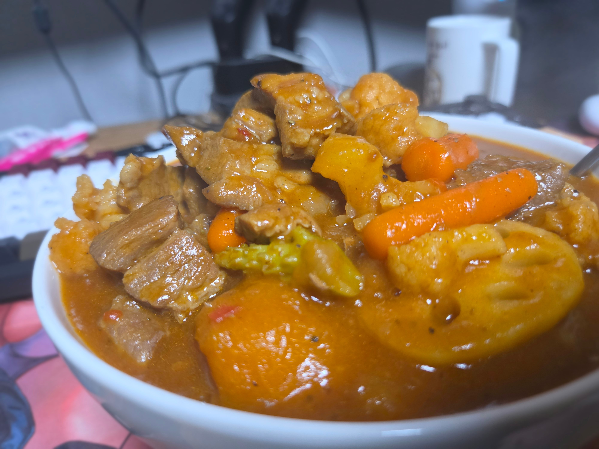
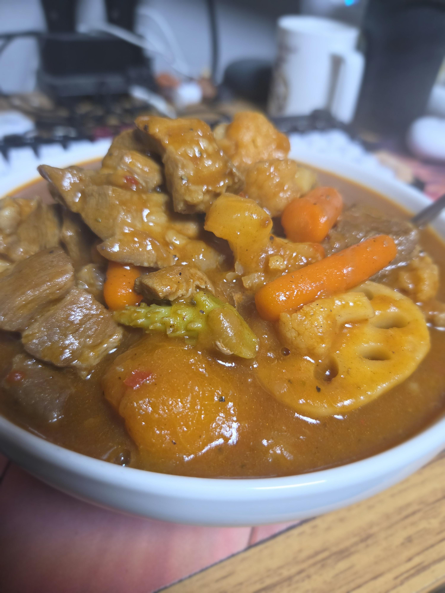

돼지 뒷다리살
당근
브로콜리
콜리플라워
따로 구운 단호박 약간
바짝 구워 지진 연근
토마토 퓨레
4시간 이상 볶은 카라멜라이징 양파
약간의 후추
S&B 카레블록 약간매운맛
크러쉬드 레드페퍼 약간.


돼지 뒷다리살
당근
브로콜리
콜리플라워
따로 구운 단호박 약간
바짝 구워 지진 연근
토마토 퓨레
4시간 이상 볶은 카라멜라이징 양파
약간의 후추
S&B 카레블록 약간매운맛
크러쉬드 레드페퍼 약간.
볶다가 물넣고 디글레이징하고
볶다가 물넣고 디글레이징하고
볶다가 물넣고 디글레이징하고
볶다가 물넣고 디글레이징하고
볶다가 물넣고 디글레이징하고
볶다가 물넣고 디글레이징하고
이하 반복
카레맛나는 고기볶음
녹진하이 쳐 직이겠노
1시간만해도 충분한데 4시간이나 하는 이유가 뭘까
4시간 하면 더 맛있으니까
토마토 캔 소스 있는데 카레에 써먹으면 맛있나
맛은 좋겠다
맛없는채소 빼고 카레는 감자 고기면 충분해~
당근 ㅅㅂ
와..씨.. 한그릇 줘보쇼
일본에 사는 외노자야?
조오오오오온나 맛있겠다
ㅗㅜㅑ일본가서 이런거시키먄 1만엔은 나오겠다


연근 맛잘알
닉값추
가람마살라랑 베트남고추 조금 넣는것도 괜찮다
당금저렇게 크면못먹겟어
양파는 4시간이나 쳐볶지말고 볶은거 사라 맛의차이가 크게안남 그리고 뭐한다고 4시간이나 볶냐 업장처럼 대량도 아닐텐데
4시간을 어케볶음?ㅎㄷㄷ